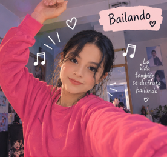
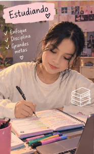
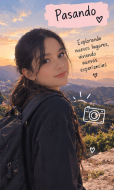

Sobre mí
Hola, me gusta aprovechar mi tiempo libre aprendiendo cosas nuevas, disfrutando de actividades al aire libre y desarrollando mis habilidades cotidianas.
Mis Gustos y Pasatiempos
🎵 Música
La música me acompaña en todo momento, me ayuda a concentrarse y a relajarme.
💃 Baile

El baile es una excelente forma de expresarme, despejar la mente y mantenerme en movimiento.
📚 Estudiar

Me gusta adquirir nuevos conocimientos y superarme día a día en mi formación personal y académica.
🧠 Autoeducarme
En mi tiempo libre aprovecho para investigar, leer y aprender de forma autónoma sobre diversos temas.
🚶 Pasear

Disfruto salir a caminar, despejar la mente y apreciar el entorno en mis momentos libres.
🌍 Un Gran Sueño: Viajar por el Mundo

Uno de mis mayores anhelos es recorrer diferentes países, conocer distintas culturas, probar gastronomías variadas y crear recuerdos inolvidables por todo el planeta.